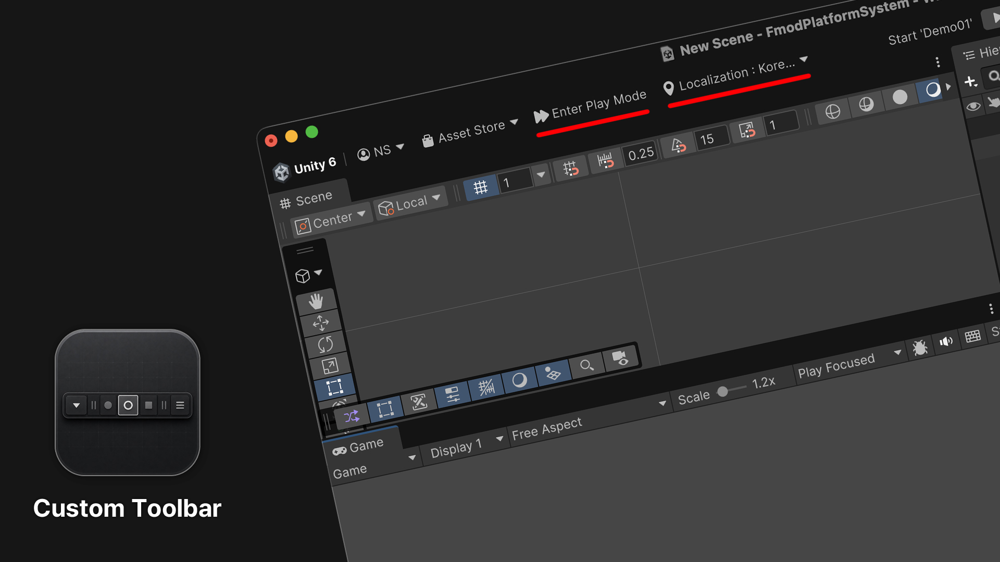

Custom Toolbar
Custom Toolbar는 프로젝트에서 자주 사용하는 기능을 Unity 메인 툴바에 추가하는 모듈형 에디터 확장입니다.

주요 기능
- Project Settings를 열지 않고 Enter Play Mode Options를 켜거나 끕니다.
- Build Settings에서 첫 번째로 활성화된 씬을 엽니다.
- 지정한 프로젝트 폴더에서 씬을 선택합니다.
Time.timeScale을 조절하고 기본값으로 되돌립니다.- FMOD for Unity가 설치된 경우 FMOD Debug Overlay를 켜거나 끕니다.
- Unity Localization이 설치된 경우 활성 Locale을 선택합니다.
Custom Toolbar는 Unity 2022.3 LTS부터 Unity 6까지 지원합니다. Unity 6.3 이상에서는 공식 Main Toolbar API를 사용하고, 그 이전 지원 버전에서는 패키지의 Legacy Toolbar Host를 사용합니다.
요구 사항을 확인한 다음 설치와 시작하기를 따라 진행하세요. 프로젝트 전용 기능을 추가하려면 커스텀 모듈 추가를 참고하세요.